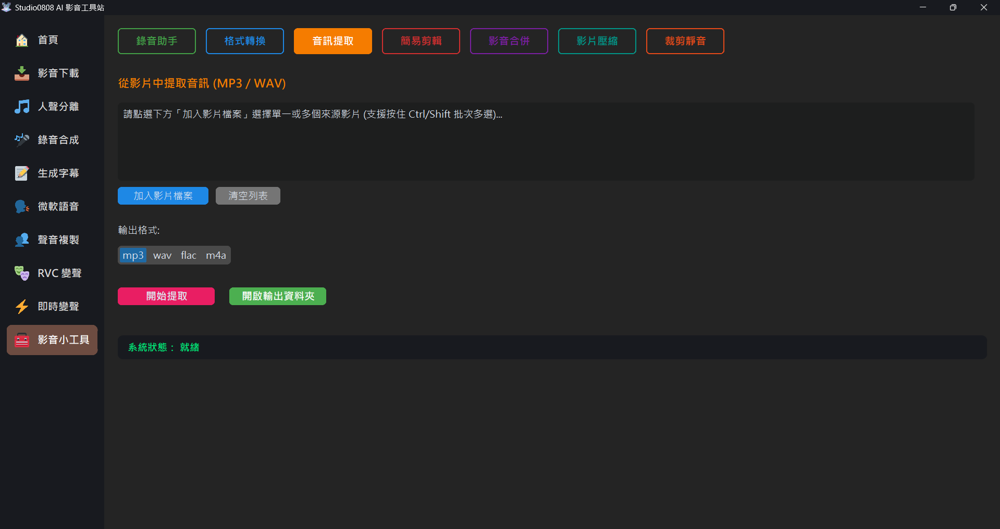

音訊提取 (Audio Extractor) 專門針對具有影像及聲音雙頻道的 MP4 及 MKV 多媒體檔案設計，能夠將畫面完全去除並抽離出乾淨的底層立體聲音軌。
💡 批次處理支援：您可以在選擇檔案時框選或按住 Ctrl / Shift 來一次加入多個檔案，系統將會啟動自動排隊處理。
💡 提示：提取完成的檔案會儲存在 Outputs/Tools 資料夾內，您可以隨時點選「開啟輸出資料夾」檢視結果。此種提取通常非常快速 (30 秒內即可完成)。
A: 音訊提取預設採用等比抽出並不會重新壓置音頻的增益設定 (Gain)。若您發現聲音怪異，通常為原始影片本身的收音環境有所誤差。
A: 系統預設只針對最重要的「主要音軌 (Track 0 或預設播放軌)」進行抽取作業，第二語言或次要音軌將會被系統忽略以保證流程簡潔。